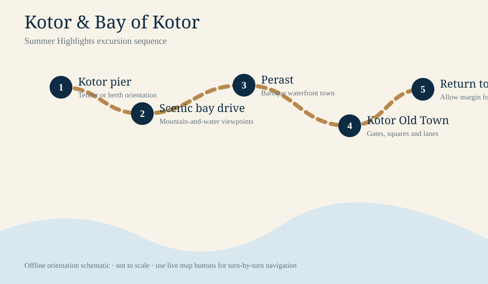

Kotor Premium chapters
Aug 28Kotor, Montenegro
9:00 AMExcursion departure
5.3 hoursBooked duration
Coach + walkingModerate day
Kotor: a fjord-like bay and a walled town
Your Summer Highlights of Montenegro excursion combines the dramatic Bay of Kotor with historic settlements and a compact Old Town.

Booked excursion
Summer Highlights
Bay scenery, Perast context and what to watch for on the panoramic drive.

Walking guide
Kotor Old Town
Gates, squares, cathedral and practical free-time priorities.

Offline map
Map & day plan
Excursion sequence and full-screen route orientation.

Visual guide
Photography
Bay layers, stone lanes, church towers and waterfront compositions.